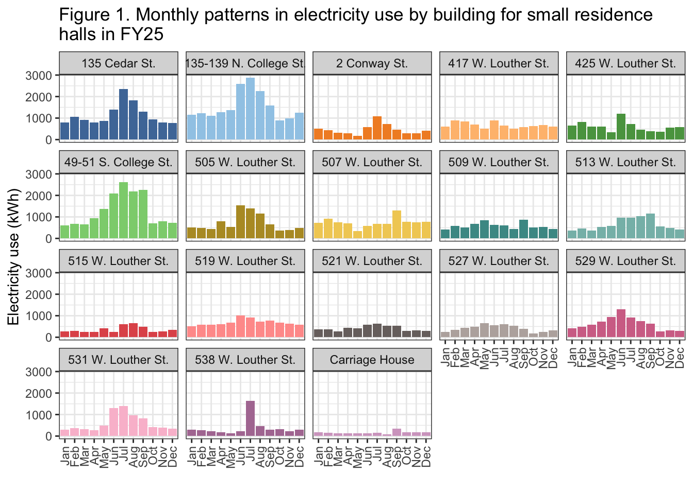
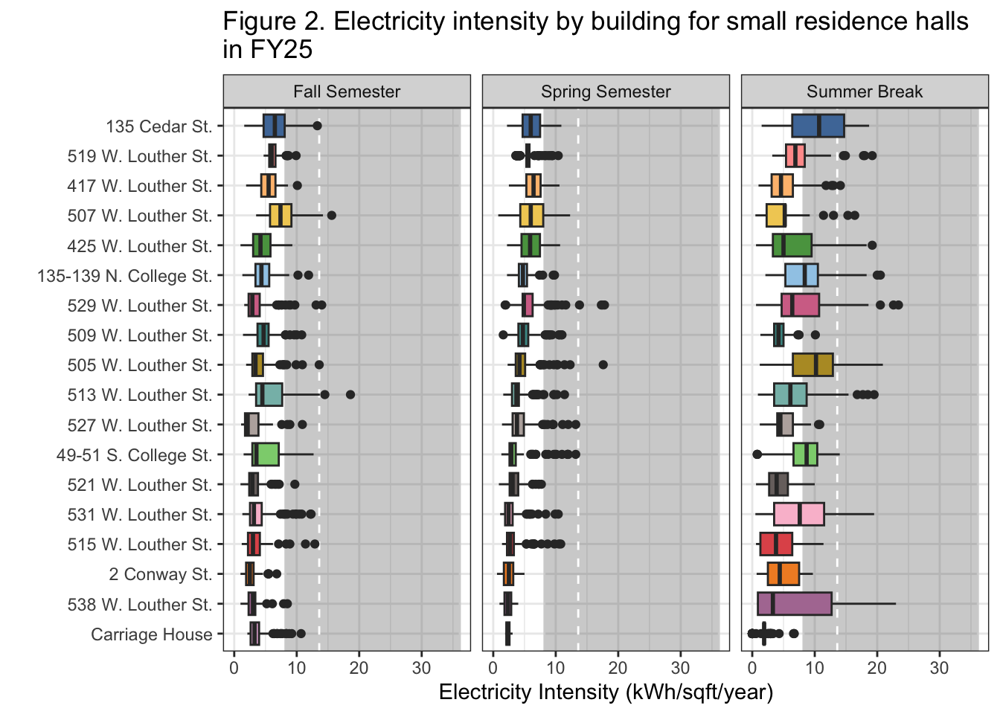

Last updated: 2026-03-30
Checks: 6 1
Knit directory: dickinson_power/
This reproducible R Markdown analysis was created with workflowr (version 1.7.2). The Checks tab describes the reproducibility checks that were applied when the results were created. The Past versions tab lists the development history.
The R Markdown file has unstaged changes. To know which version of
the R Markdown file created these results, you’ll want to first commit
it to the Git repo. If you’re still working on the analysis, you can
ignore this warning. When you’re finished, you can run
wflow_publish to commit the R Markdown file and build the
HTML.
Great job! The global environment was empty. Objects defined in the global environment can affect the analysis in your R Markdown file in unknown ways. For reproduciblity it’s best to always run the code in an empty environment.
The command set.seed(20260107) was run prior to running
the code in the R Markdown file. Setting a seed ensures that any results
that rely on randomness, e.g. subsampling or permutations, are
reproducible.
Great job! Recording the operating system, R version, and package versions is critical for reproducibility.
Nice! There were no cached chunks for this analysis, so you can be confident that you successfully produced the results during this run.
Great job! Using relative paths to the files within your workflowr project makes it easier to run your code on other machines.
Great! You are using Git for version control. Tracking code development and connecting the code version to the results is critical for reproducibility.
The results in this page were generated with repository version 10db689. See the Past versions tab to see a history of the changes made to the R Markdown and HTML files.
Note that you need to be careful to ensure that all relevant files for
the analysis have been committed to Git prior to generating the results
(you can use wflow_publish or
wflow_git_commit). workflowr only checks the R Markdown
file, but you know if there are other scripts or data files that it
depends on. Below is the status of the Git repository when the results
were generated:
Ignored files:
Ignored: .DS_Store
Ignored: .Rhistory
Ignored: .Rproj.user/
Ignored: analysis/.DS_Store
Ignored: analysis/.Rhistory
Ignored: analysis_to-fix/.DS_Store
Ignored: data/.DS_Store
Ignored: data/FY25 Main Meter Data.xlsx
Ignored: data/building_list_FY25_updated.xlsx
Ignored: data/graph_data_life_exp.csv
Ignored: data/housing_counts.csv
Ignored: keys/.DS_Store
Ignored: output/annual_kwh.csv
Ignored: output/building_check.csv
Ignored: output/building_check.xlsx
Ignored: output/daily_kwh.csv
Ignored: output/kwh_academic_2026-03-16.csv
Ignored: output/kwh_academic_2026-03-17.csv
Ignored: output/kwh_academic_2026-03-18.csv
Ignored: output/kwh_academic_2026-03-22.csv
Ignored: output/kwh_academic_2026-03-23.csv
Ignored: output/kwh_academic_2026-03-25.csv
Ignored: output/kwh_academic_2026-03-30.csv
Ignored: output/kwh_annual.csv
Ignored: output/kwh_annual_2026-03-04.csv
Ignored: output/kwh_annual_2026-03-12.csv
Ignored: output/kwh_annual_2026-03-16.csv
Ignored: output/kwh_annual_2026-03-17.csv
Ignored: output/kwh_annual_2026-03-18.csv
Ignored: output/kwh_annual_2026-03-22.csv
Ignored: output/kwh_annual_2026-03-23.csv
Ignored: output/kwh_annual_2026-03-25.csv
Ignored: output/kwh_annual_2026-03-30.csv
Ignored: output/kwh_annual_20260225.csv
Ignored: output/kwh_annual_20260226.csv
Ignored: output/kwh_daily.csv
Ignored: output/kwh_daily_2026-03-04.csv
Ignored: output/kwh_daily_2026-03-12.csv
Ignored: output/kwh_daily_2026-03-16.csv
Ignored: output/kwh_daily_2026-03-17.csv
Ignored: output/kwh_daily_2026-03-18.csv
Ignored: output/kwh_daily_2026-03-22.csv
Ignored: output/kwh_daily_2026-03-23.csv
Ignored: output/kwh_daily_2026-03-25.csv
Ignored: output/kwh_daily_2026-03-30.csv
Ignored: output/kwh_daily_20260225.csv
Ignored: output/kwh_daily_20260226.csv
Ignored: output/kwh_main_annual.csv
Ignored: output/kwh_main_daily.csv
Unstaged changes:
Modified: analysis/Report_I_Academic.Rmd
Modified: analysis/Report_I_Admin.rmd
Modified: analysis/Report_I_Medium.Rmd
Modified: analysis/Report_I_Other.Rmd
Modified: analysis/Report_I_Residential-L.Rmd
Modified: analysis/Report_I_Small_Residence_Halls.Rmd
Modified: analysis/_site.yml
Modified: analysis/main_meter_anova.Rmd
Modified: analysis/main_meter_regression.Rmd
Note that any generated files, e.g. HTML, png, CSS, etc., are not included in this status report because it is ok for generated content to have uncommitted changes.
These are the previous versions of the repository in which changes were
made to the R Markdown
(analysis/Report_I_Small_Residence_Halls.Rmd) and HTML
(docs/Report_I_Small_Residence_Halls.html) files. If you’ve
configured a remote Git repository (see ?wflow_git_remote),
click on the hyperlinks in the table below to view the files as they
were in that past version.
| File | Version | Author | Date | Message |
|---|---|---|---|---|
| Rmd | 10db689 | maggiedouglas | 2026-03-30 | change navigation bar and add student report sections |
The small residential building category includes all on-campus residence halls that are smaller than 2,000 square feet. (135 N. College St. shares a meter with 139 N. College St. and 49 S. College St. shares a meter with 51 S. College St. Each of these individual buildings are smaller than 2,000 square feet, but the square footage for each of these two meters adds up to more than 2,000 square feet.) This building category primarily contains small apartments as well as some townhouses that house students during the academic year.
There are 19 buildings in this category. One of these buildings (169 W. High St.) is located on the main meter; the other 18 buildings are individually metered. Together, these buildings comprise 30,353 square feet. This is the smallest total square footage among the different building categories. Most of these buildings were built in the late 19th and early 20th centuries and acquired by Dickinson in the late 20th and early 21st centuries. Additionally, almost all of these buildings have been renovated within the last decade.
str(annual_kwh)'data.frame': 99 obs. of 8 variables:
$ type : chr "Academic" "Academic" "Academic" "Academic" ...
$ meter : chr "Individual" "Individual" "Individual" "Individual" ...
$ NAME : chr "162-164 Dickinson Ave." "46 S. West St." "57 S. College" "Carlisle Theatre" ...
$ days_perc: num 100 100 100 100 100 ...
$ kwh : num 9217 6493 12221 29070 21575 ...
$ kwh_corr : num 9217 6493 12221 29070 21575 ...
$ sqft : int 2500 1775 4576 4000 2500 29133 33692 11039 22000 120000 ...
$ occupants: num NA NA NA NA NA NA NA NA NA NA ...str(daily_kwh)'data.frame': 37230 obs. of 10 variables:
$ type : chr "Residential - M" "Residential - M" "Residential - M" "Residential - M" ...
$ meter : chr "Individual" "Individual" "Individual" "Individual" ...
$ NAME : chr "100 S. West St." "100 S. West St." "100 S. West St." "100 S. West St." ...
$ days_perc: num 100 100 100 100 100 100 100 100 100 100 ...
$ sqft : int 7190 7190 7190 7190 7190 7190 7190 7190 7190 7190 ...
$ occupants: num 19 19 19 19 19 19 19 19 19 19 ...
$ period : chr "Summer Break" "Summer Break" "Summer Break" "Summer Break" ...
$ date : chr "2024-07-01" "2024-07-02" "2024-07-03" "2024-07-04" ...
$ kwh : num 98.5 106.7 122.8 135.9 138 ...
$ ave_temp : int 69 73 78 81 84 86 84 84 86 87 ...str(academic_kwh)'data.frame': 99 obs. of 8 variables:
$ type : chr "Academic" "Academic" "Academic" "Academic" ...
$ meter : chr "Individual" "Individual" "Individual" "Individual" ...
$ NAME : chr "162-164 Dickinson Ave." "46 S. West St." "57 S. College" "Carlisle Theatre" ...
$ days_perc: num 100 100 100 100 100 ...
$ kwh : num 4986 3208 8443 15478 15421 ...
$ kwh_corr : num 4986 3208 8443 15478 15421 ...
$ sqft : int 2500 1775 4576 4000 2500 29133 33692 11039 22000 120000 ...
$ occupants: num NA NA NA NA NA NA NA NA NA NA ...datatable(annual_s_residential, rownames = FALSE,
filter = "none",
class = "compact",
options = list(pageLength = 18, autoWidth = TRUE, dom = 't'),
caption = "Table 1. Total electricity use, estimated financial cost, and estimated greenhouse gas emissions of small residence halls during fiscal year 2025.")datatable(academic_s_residential, rownames = FALSE,
filter = "none",
class = "compact",
options = list(pageLength = 18, autoWidth = TRUE, dom = 't'),
caption = "Table 2. Total electricity use, estimated financial cost, and estimated greenhouse gas emissions of small residence halls during academic year 2024/2025.")For the 2025 fiscal year, electricity use among small residence halls ranged between 1952 kWh and 18531 kWh with a median of 7518.5 kWh. For the 2024-2025 academic year only, electricity use ranged between 1481 kWh and 10149 kWh with a median of 4572.5 kWh. The estimated total cost of powering the small residence halls during the 2025 fiscal year was approximately $11,882 and total GHG emissions were approximately 44 metric tons of CO2. The three buildings which used the most electricity among small residence halls during both the fiscal year and the academic year were 135-139 N. College St., 49-51 S. College St., and 135 Cedar St., while the building which used the least electricity was Carriage House. 135 Cedar St. also had the highest electricity intensity among the small residence halls.
ggplot(monthly_s_residential, aes(x = month, y = total_kwh, fill = NAME)) +
geom_col(position = "stack") +
facet_wrap(. ~ NAME) +
scale_fill_paletteer_d("ggthemes::Tableau_20") +
theme_bw() +
theme(axis.text.x = element_text(angle = 90, vjust = 0.5, hjust = 1)) +
theme(legend.position = "none") +
labs(title = "Figure 1. Monthly patterns in electricity use by building for small residence\nhalls in FY25", x = "", y = "Electricity use (kWh)")
As seen in Figure 1, most of the small residence halls observed a peak in electricity use during the summer months (June-August), while a few had electricity use evenly distributed throughout the year. A notable exception is 507 W. Louther St., which instead observed a peak in electricity use in early fall. All of the small residence halls had comparably low electricity use in late fall and early winter.
ggplot(daily_s_residential_drop_winter,
aes(fct_reorder(NAME, kwh_sqft_annual, median), y = kwh_sqft_annual, fill = NAME)) +
annotate("rect", xmin = -Inf, xmax = Inf, ymin = 8.2, ymax = 36.1, color = "lightgray", alpha = 0.3) + geom_hline(yintercept = 13.6, linetype = "dashed", color = "white") +
geom_boxplot() +
coord_flip() +
facet_wrap(period ~ .) +
theme_bw() +
theme(legend.position = "none") +
scale_fill_paletteer_d("ggthemes::Tableau_20") +
labs(title = "Figure 2. Electricity intensity by building for small residence halls\nin FY25", x = "", y = "Electricity Intensity (kWh/sqft/year)")
As seen in Figure 2, there was no significant variation in median electricity intensity among small residence halls during the 2025 fiscal year. Each building’s median electricity intensity fell below the median of all college and university buildings in the U.S. in 2018 (13.6 kWh/sqft/year), although some outliers lied above this median (EIA 2022). Overall electricity intensity was highest during summer break; the 75th percentile of electricity intensity for 135 Cedar St. during summer break lied above the median of all college and university buildings in the EIA report, while the 75th percentiles of a few other buildings also approached this value during the summer.
The HVAC systems in each building could explain the distribution of electricity use; most of the small residence halls are heated by natural gas and oil and cooled using electricity (M. Kiner, personal communication, February 18, 2026). The high electricity use in the summer months is notable because occupancy data suggests that these buildings are uninhabited during summer break. We recommend minimizing electricity use during the summer months by performing the following actions:
Ensuring that thermostats are turned off or set to an electricity-efficient level.
Turning off and unplugging other unused appliances that could be using electricity.
Leaving small residence halls unoccupied during the summer months and rather assign students and guests to larger, newer, and more efficient residence halls.
We also recommend installing sub-meters for 135 and 139 N College St. as well as 49 and 51 S College St. This would allow us to better understand electricity use patterns per building for these four buildings.
Leary, N. (2025). Dickinson College Greenhouse Gas Inventory 2008-2023. Center for Sustainability Education.
Energy Information Administration (EIA). (2022). 2018 Commercial Buildings Energy Consumption Survey (CBECS). https://www.eia.gov/consumption/commercial/
Luke revised and formatted the faceted bar plot and box plot figures and drafted the Background section. Valerie created the electricity use table for the academic year and drafted the electricity use summary. Luke & Valerie both drafted the Recommendations section. Luke proofread the final code and text and submitted the assignment.
The AI Search tool on Ecosia (a web browser) was used to help troubleshoot R code; one instance where we relied on help from AI was to add captions to our figures.
We noticed two potential issues in the small residence halls data: for the building 425 W. Louther St., the occupants variable is equal to 3.5 (this is true for the academic, annual, and daily datasets). Neither of us are sure what the half of an occupant is meant to represent. Additionally, the building 169 W. High St., which is included in our category, does not have any electricity use data and as such is not included in our summary table above (although this could be because it is on the main meter).
sessionInfo()R version 4.5.2 (2025-10-31)
Platform: x86_64-apple-darwin20
Running under: macOS Ventura 13.7.8
Matrix products: default
BLAS: /Library/Frameworks/R.framework/Versions/4.5-x86_64/Resources/lib/libRblas.0.dylib
LAPACK: /Library/Frameworks/R.framework/Versions/4.5-x86_64/Resources/lib/libRlapack.dylib; LAPACK version 3.12.1
locale:
[1] en_US.UTF-8/en_US.UTF-8/en_US.UTF-8/C/en_US.UTF-8/en_US.UTF-8
time zone: America/New_York
tzcode source: internal
attached base packages:
[1] stats graphics grDevices utils datasets methods base
other attached packages:
[1] paletteer_1.7.0 DT_0.34.0 lubridate_1.9.5 forcats_1.0.1
[5] stringr_1.6.0 dplyr_1.2.0 purrr_1.2.1 readr_2.2.0
[9] tidyr_1.3.2 tibble_3.3.1 ggplot2_4.0.2 tidyverse_2.0.0
loaded via a namespace (and not attached):
[1] sass_0.4.10 generics_0.1.4 prismatic_1.1.2 stringi_1.8.7
[5] hms_1.1.4 digest_0.6.39 magrittr_2.0.4 timechange_0.4.0
[9] evaluate_1.0.5 grid_4.5.2 RColorBrewer_1.1-3 fastmap_1.2.0
[13] rprojroot_2.1.1 workflowr_1.7.2 jsonlite_2.0.0 whisker_0.4.1
[17] rematch2_2.1.2 promises_1.5.0 crosstalk_1.2.2 scales_1.4.0
[21] jquerylib_0.1.4 cli_3.6.5 rlang_1.1.7 withr_3.0.2
[25] cachem_1.1.0 yaml_2.3.12 otel_0.2.0 tools_4.5.2
[29] tzdb_0.5.0 httpuv_1.6.16 vctrs_0.7.1 R6_2.6.1
[33] lifecycle_1.0.5 git2r_0.36.2 htmlwidgets_1.6.4 fs_1.6.7
[37] pkgconfig_2.0.3 pillar_1.11.1 bslib_0.10.0 later_1.4.8
[41] gtable_0.3.6 glue_1.8.0 Rcpp_1.1.1 xfun_0.56
[45] tidyselect_1.2.1 rstudioapi_0.18.0 knitr_1.51 farver_2.1.2
[49] htmltools_0.5.9 labeling_0.4.3 rmarkdown_2.30 compiler_4.5.2
[53] S7_0.2.1